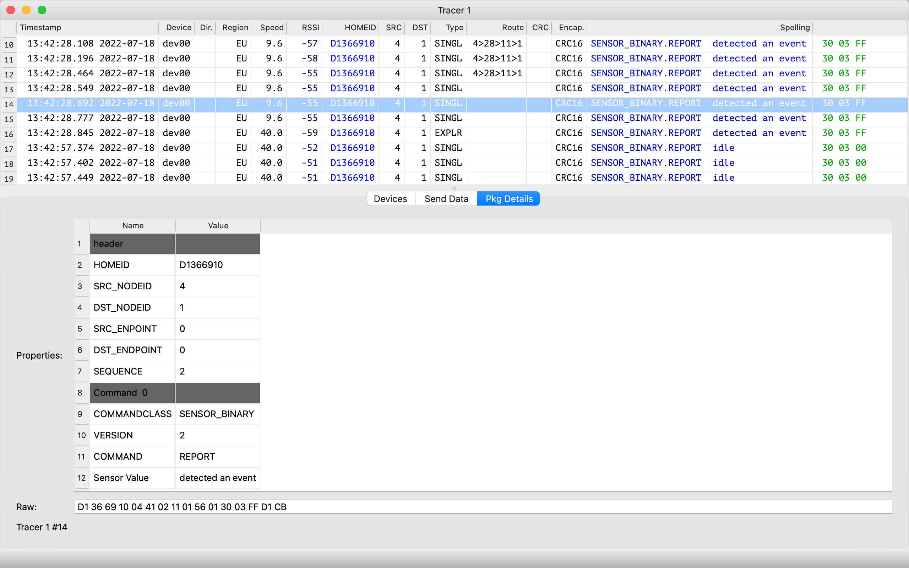
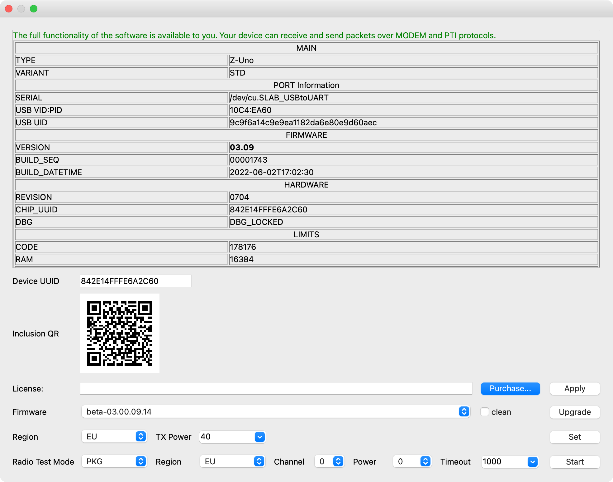
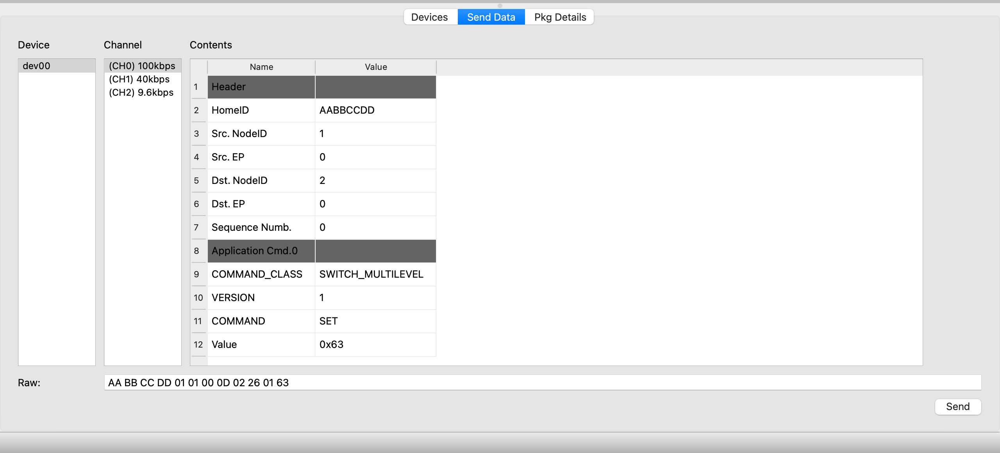
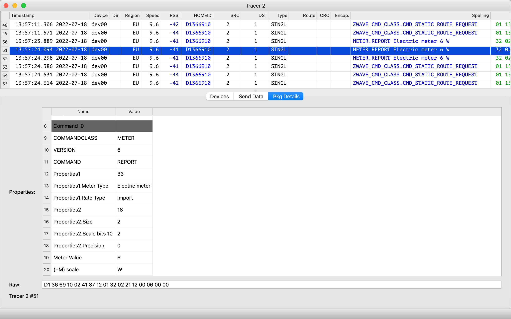
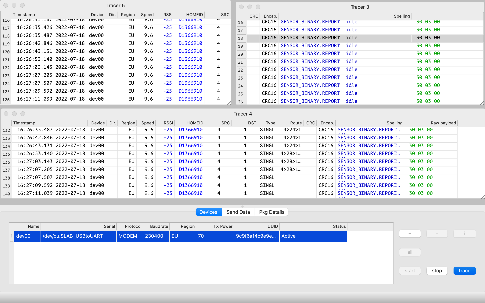
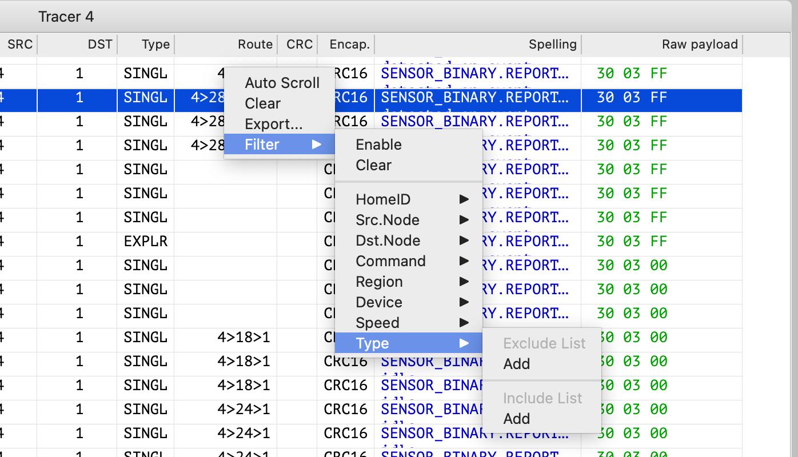
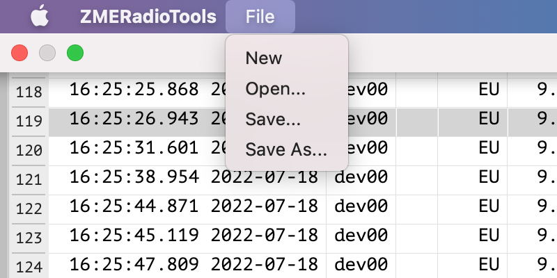
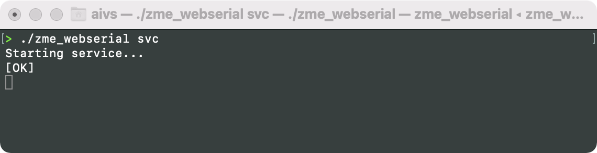
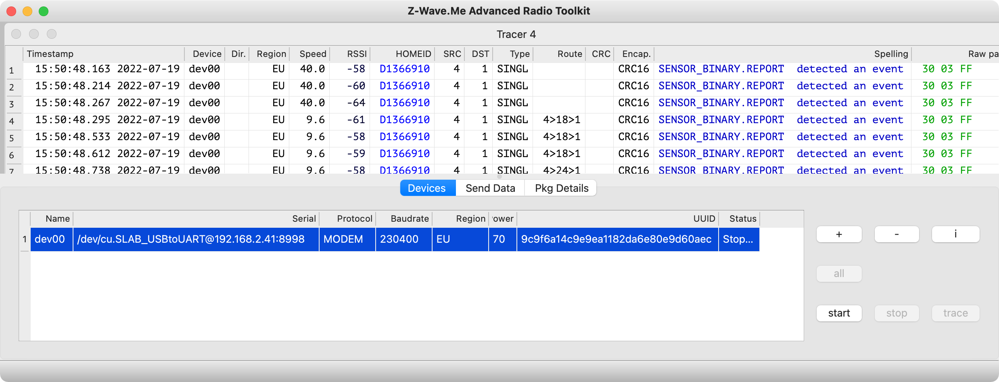

Z-Wave.Me Zniffer and Advanced Radio Toolkit (A.R.T.)
Version 0.2b3
Z-Wave.Me Zniffer and Advanced Radio Toolkit (A.R.T.) is a software and hardware designed to help professionals and installers analyze wireless networks, decrypt Z-Wave/Thread/Zigbee/Bluetooth packets, compose and send packets.
Monitoring radio commands allows you to identify problems in the Z-Wave network, such as incorrect routes, associations with non-existent devices, incorrect packet, security schemes mismatch and much more.
Composing and sending packages will be useful for advanced installers and developers of Z-Wave devices to check regular and abnormal situations.
Z-Uno 2 or RaZberry 7 with a Z-Wave chip of the 7th generation and higher is used as equipment for listening and sending radio commands. The Zniffer/A.R.T. can work simultaneously with several equipment, in this case, you can observe the signal strength of each packet from various locations at the same time. It also allows to monitor multiple frequencies at the same time.
In order to enable the Zniffer feature in the equipment, it is necessary to purchase a license.
Installation
Download
Zniffer/A.R.T. is available for macOS, Linux x64 and Windows 32/64. The latest version can be downloaded from:
https://storage.z-wave.me/zniffer/latest/Prepare your hardware
Zniffer/A.R.T. software requires RaZberry 7 or Z-Uno 2 as a hardware. To enable the new feature a new firmware (version 7.26 or upper for RaZberry 7 and 3.0.9 for Z-Uno 2). Firmware update can be done right in the Zniffer/A.R.T. user interface.
The licese for your RaZberry 7 and Z-Uno 2 can also be purchaised and enabled in the Zniffer/A.R.T. user interface.
User Interface
Zniffer/A.R.T. interface allows to add the equipment, start/stop traces, decode packets and send packets.
Devices
Сonnect the equipment to the computer, press "+" to add it to the devices list and select the serial port. If selected correctly, the equipment will be detected and UUID will be displayed.

Each equipment is can be configured in the devices list:
- Name — The name of the equipment (Z-Uno, RaZberry) that listens to the radio broadcast. It will be displayed in the Trace window. Can be edited.
- Serial — Device port. Both local and remote (using web serial) ports are supported.
- Protocol — Protocol for equipment interaction with the Zniffer/A.R.T application (Modem — special mode with the ability to monitor and send packets, PTI — Z-Uno/RaZberry continues to work in normal mode and report all incoming packets).
- Baudrate — Serial port speed. For PTI, it is selected manually (for RaZberry 7 it is always 230400, for Z-Uno 2 by default 230400 and should match the speed in zunoPTIConfigUART function). For Modem, it is detected automatically.
- Region — The radio frequency on which the equipment listens to the radio broadcast. For PTI the current frequency of the equipment is used.
- TX Power — The radiation power of the modem is 0.1 dBm. Not available for PTI mode. For Modem it is possible to set a value from 0 to 200, i.e. from 0 to 20 dBm.
- UUID — The UUID of the equipment USB adapter. Read-only field.
- Status — Shows the status of the equipment: idle or tlistening.
- Buttons:
- + — Add new equipment.
- – — Delete the selected equipment.
- i — Information about the selected equipment (does not work while the equipment is in listening mode).
- all — Select all equipments.
- start — Start listening to the radio on the selected equipment.
- stop — Stop listening to the radio.
- trace — Open a window for viewing the traffic of the radio for the selected equipment
About equipment
This window contains full information about the capabilities of the equipment and other functions.
- Type of equipment
- Is the license activated for the equipment to work with the software
- Purchase license button
- Check the operation of the radio in the equipment
- Select the radio frequency (region) and adjust the transmitter power
- For Z-Uno 2, it is possible to get a QR code to include via SmartStart/S2
Send data
You can send a packet only if the equipment is running on the Modem mode.
- Device — The equipment from which the package will be sent
- Channel — Data sending channel
- Contents — A table that allows you to generate a package for sending
- RAW — Package to be sent in the HEX format
Packet details
As an example, the screenshot shows a package from an socket plug with a measurement of energy consumption.
- The table shows detailed information about the selected Z-Wave package from the Trace window.
- The user can select the version of the Command Class. By default, the latest available version is used.
- If one byte contains several properties, then each is written from a new line.
- For some packages, additional data may be displayed, for example, a decoding of the meter value.
Tracing window area
The trace window in real time shows all Z-Wave radio commands at a given frequency.
To create a new Trace window, select the equipment on the Devices tab and click the trace button. If the trace button is not active, then first you need to press the start button.
You can use several equipment at the same time in one Trace window. One equipment can be used in several Trace windows.
If you press the right mouse button in the Trace window anywhere, a context menu will appear.
- Auto Scroll — enable/disable automatic scroll to always show the latest packet.
- Clear — clear the Trace window.
- Export... — export selected packets in JSON/CSV format.
- Filter — allows to filter packets (show only filtered packets or exclude filtered packets).
Menu bar
- New — Create the new project
- Open — Open the saved project
- Save/Save As — The project is saved in JSON format and contains a list of equipment with name, port, trace windows, statistics, including S0/S2 encryption keys, HomeID, etc.
Window mode
Zniffer can work in Multi-Document Interface mode (with many windows inside one window, this is the default mode) as well as with separate windows. Use -ft command line option to switch to separate windows mode: zme_radiotools -ft
Using Zniffer/A.R.T.
License
You can buy a license from the About equipment window or on the website, and you will need to specify the Device UUID.
https://z-wave.me/hardware-capabilities/
If the device already has a license, and you bought a new one, then open the window About equipment and it is applied automatically.
Operating mode: PTI and MODEM
Both Z-Uno 2 and RaZberry 7 can work in two different modes:
- PTI (Packet Trace Interface) — only allows you to sniff Z-Wave packets, while the device is operating normally. The user code works on Z-Uno, the controller code works on RaZberry. This is a good way of debugging, still keeping your device doing its job. In order to enable this mode in the Z-Uno 2, you need to add a special call to the sketch and specifies the pin and speed to be used.
- MODEM — the equipment is completely controlled by the Zniffer/A.R.T. software. You can sniff and send Z-Wave packets. The user's settings on Z-Uno 2 and RaZberry 7 are not lost, the device will return in its standard mode after the listening is stopped in the Zniffer/A.R.T. stopped. The MODEM license includes the PTI license.
All versions of Z-Uno 2 support both modes. All versions of RaZberry 7 support modem mode. PTI mode is supported only by some versions of RaZberry 7.
Remote port
The zme_webserial utility allows you to connect to the equipment that is used on a remote computer. This allows to watch packets from different points in the house in one user interface. The connection to the equipment is done via ethernet or Wi-Fi using the zme_webserial tool.
The zme_webserial utility works not only with Zniffer/A.R.T, but also with other Z-Wave.Me utilities, such as zme_make and zme_programmer.
When configuring the utility, you can specify which ports are visible remotely based on the "white" and "black" lists.
Equipment can be referenced by the port name or the UUID of the equipment.
Example of connecting to remote equipment:
- /dev/cu.SLAB_USBtoUART@192.168.2.41:8998 — macOS
- /dev/ttyUSB0@192.168.2.41:8998 — Linux/Raspberry Pi
- COM11@192.168.2.41:8998 — Windows
- 0x667074e5cbe9ea11a74b7a80e9d60aec@192.168.2.41:8998 — reference the device by the UUID
Encryption keys S0/S2
To decrypt encrypted packets, you need to get the encryption keys. There are 3 ways to get encryption keys.
- Zniffer/A.R.T. supports the import of the PC-Controller format files. The key files must be placed in a special user folder (~/ZMEStorage/SecurityKeys).
- Zniffer/A.R.T. can catch S0 key from the Z-Wave radio during inclusion of any device to the Z-Wave network and save it to the key folder.
- Zniffer/A.R.T. can extract S0/S2 keys from Z-Uno, which is included to the Z-Wave network (license required, it is included in both PTI and MODEM modes).
PTI pin
RaZberry
On the reverse side of the RaZberry there is a connector with GND and TX pins. To connect RaZberry PTI to a computer, you need a USB-TTL adapter.
Connection scheme:
- RaZberry GND ↔ USB-TTL GND
- RaZberry TX ↔ USB-TTL RX

Z-Uno
To enable PTI mode on Z-Uno, you need to add the following code to the sketch. Any pin can be used for PTI. Selecting TX2 pin will forward PTI traffic to the Z-Uno USB port. Note that the pin selected for PTI is not available for your sketch.
The main sketch will continue to operate normally while PTI is enabled.
Example of the code with PTI enabled:
#define PTI_PIN TX2 // TX2 is default USB pin
#define PTI_BAUDRATE 230400 L // The minimal baud rate is 230400, the maximum baud rate is 1.6MBit
void setup() {
Serial0.begin(115200);
if (zunoPTIConfigUART(PTI_PIN, PTI_BAUDRATE)) {
Serial0.println("[Done]");
} else {
Serial0.println("[Failed]");
}
}
// Just an empty loop function
void loop() {}
Future development
Zniffer/A.R.T. software is in active development. New features are added every month. Below is the list of features to be implemented soon:
- S2 decryption
- S0 and S2 encryption to send secure packets
- Supervision, MultiCmd and TransportService decoding
- Support of the SiLabs .zlf format (open and save)
- Network statistics like in Z-Way Analytics page
- Support of BLE and 802.15.4 (Zigbee/Thread/Matter) PHY layers